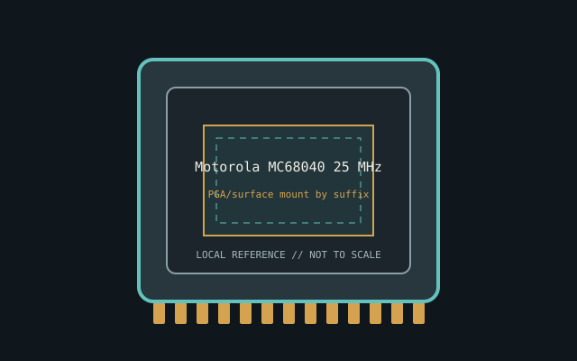

[ INDIVIDUAL CPU COMPONENT ]
Motorola MC68040 25 MHz
Full 68040, 25 MHz; 4 KB I + 4 KB D cache, MMU and FPU. Model-specific record; confirm the complete part marking before installation.

IDENTIFICATION: Motorola MC68040 25 MHz. Product name alone does not establish package, stepping, voltage or firmware compatibility.
Verified model specifications
| Catalog path | Other → Motorola 68000-family processors |
|---|---|
| Model and compute | Full 68040, 25 MHz; 4 KB I + 4 KB D cache, MMU and FPU |
| Package / socket | PGA/surface mount by suffix |
| Compatibility | Board must support full 68040; not equivalent to LC/EC |
| Stepping and variants | Full/LC/EC differ in FPU/MMU/cache; read suffix |
Compatibility and service
- Board must support full 68040; not equivalent to LC/EC
- Full/LC/EC differ in FPU/MMU/cache; read suffix
- Don't substitute by fit; document package/clock
- Confirm board manual, exact CPU support list, firmware, voltage/power, memory and cooling before use; never force a package.
Service & archival notes
Don't substitute by fit; document package/clock
Photograph package, markings, contacts and date/lot codes before repair. Log host board, BIOS/microcode, memory, cooler, condition, provenance and source revision.
Sources & further reading
- NXP/Motorola M68020 User ManualManufacturer bus reference; confirm package drawing for the exact suffix. Original page is gone; this is the Internet Archive’s copy.
- NXP legacy processor documentsManufacturer documentation index.
- Various Creators — AMIGA 4000 Dcr Cyberstorm 68040 CPU Board test and reviewIndependent video review; treat as supplementary context, not primary manufacturer documentation.
Manufacturer documents take precedence. Family-level references may not resolve every stepping; verify the marking and motherboard CPU list.